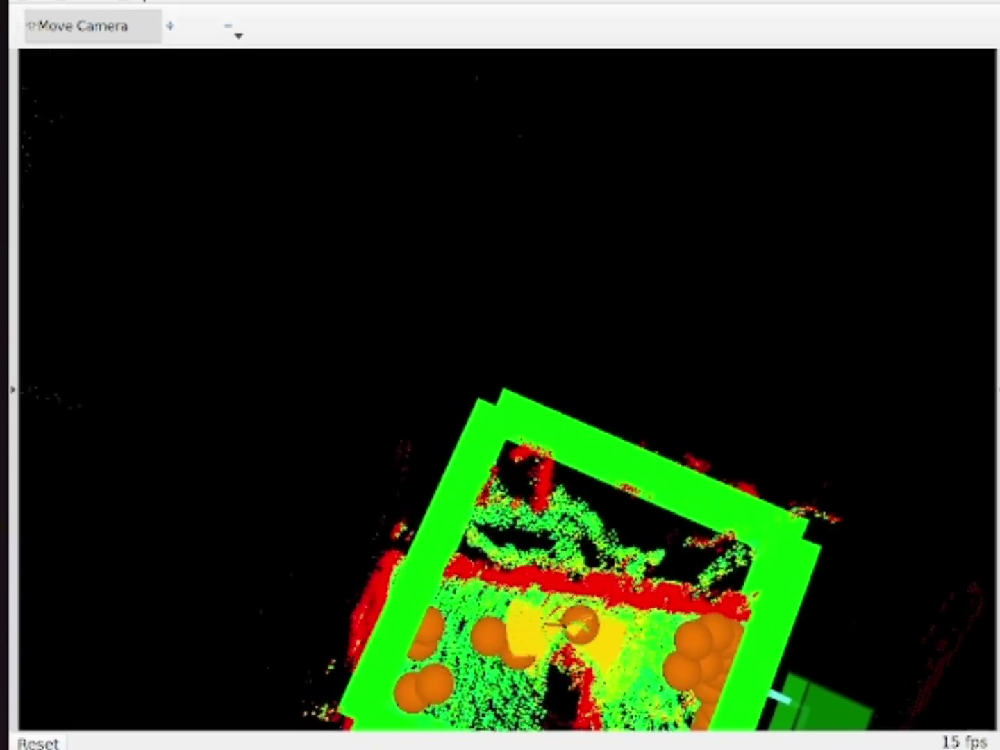
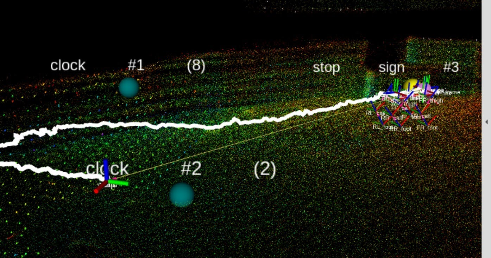
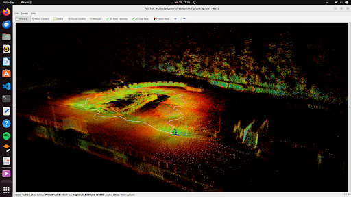

Project · Autonomous Exploration
ETH Robotics Summer School 2026
Unitree A2 · RESPLE · TARE · MuJoCo · Bag replay

At the ETH Robotics Summer School 2026, our team worked on autonomous exploration with a Unitree A2 quadruped in a disaster-response scenario. The goal was to send the robot into an unknown environment, let it explore autonomously, build a map, and report the positions of objects of interest.
The project was not about implementing SLAM or planning algorithms from scratch. It was about taking an existing autonomy stack and making it work reliably on a real robot in a real environment.
We used RESPLE for LiDAR-based state estimation and mapping, and TARE for autonomous exploration planning. To prepare and test the system, we worked in MuJoCo simulation, created maps for planner evaluation, and replayed recorded data to understand how different parts of the stack behaved before deploying on hardware.


After simulation and replay testing, we moved to real robot trials. The main work was tuning the system until the robot could follow exploration goals safely and produce a usable map.
My main contribution was tuning the local planner and validating the navigation behavior on the Unitree A2. I adjusted planner and traversability parameters, tested how the robot reacted to exploration goals, checked whether planned paths were feasible for the quadruped, and debugged the interaction between mapping, state estimation, terrain representation, and collision avoidance.
I also did a large part of the real robot testing, iterating between simulation, bag replay, and field runs to identify failure cases and improve the behavior.